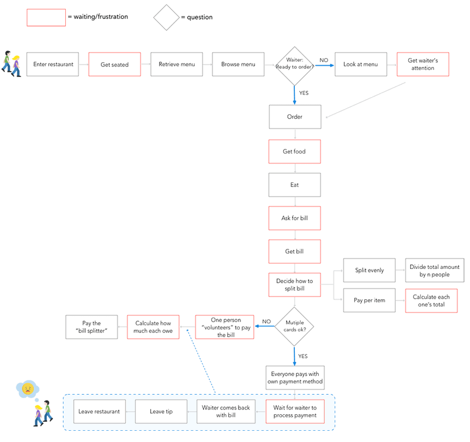
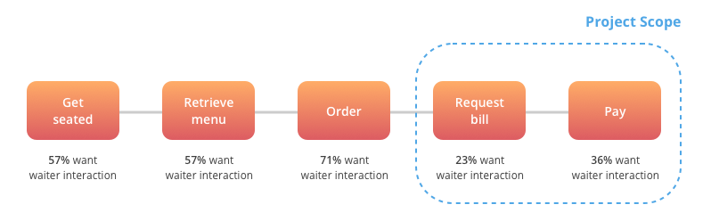
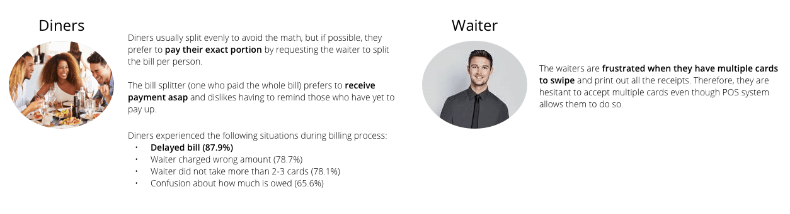
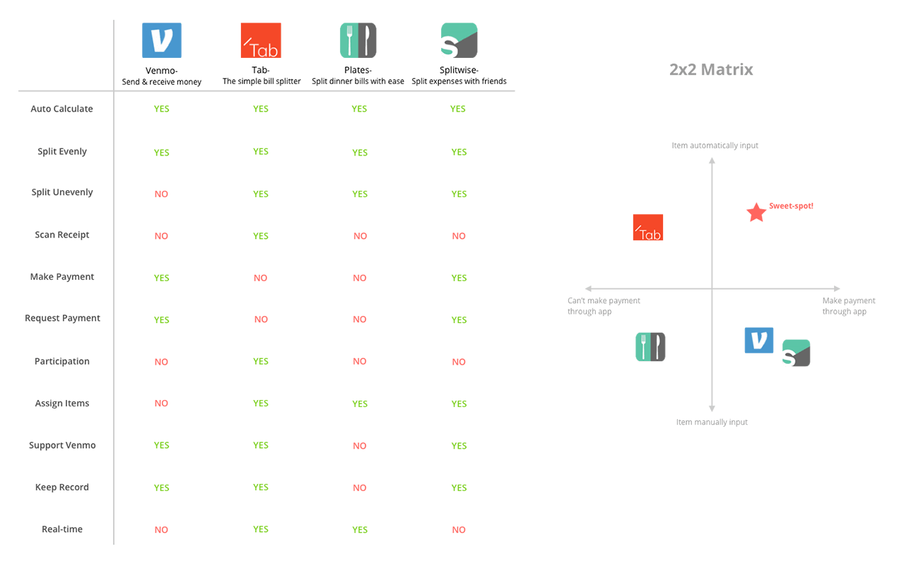

We need better and more efficient dining experience
The idea of eating as a social activity is nothing new. People dine out to have a quality time but there seems to be significant inefficiencies that prevent them from having pleasant dining experience. From waiting to get seated to fighting for waiter’s attention to splitting complex bill, that dinner night can turn out to be a nightmare. Meanwhile, technology in the restaurant industry is rapidly becoming the new normal as 81 percent of the restaurants use a point-of-sales (POS) system. Today’s POS systems like Breadcrumb and Square are advanced enough to feature multiple card processing, labor management, and integration with other software. We should leverage current POS system technology to enhance the dining experience.
User Journey
Anyone would relate to this user journey...
User Research
Since there exists many frustrating moments at different stages, we decided to conduct user research to narrow down the project scope. We conducted open-ended interviews with frequent diners, including former waiters, to understand their habits & experience from both sides. After uncovering common frustrations (which are ordering and billing process), we sent out online survey with a focus on those frustrations. The insights from the research were critical in narrowing down on designing a solution for a better billing experience.
Project Scope
Q. Which of the following situations would you want your waiter's interaction?
Key Takeaways
Competitive Analysis
After narrowing down our scope to designing a solution for billing process, we observed other mobile applications that help users to pay and split bill at a restaurant. After putting them into 2x2 matrix, we were able to find our market opportunity.
Solution
We iterated on the service concept, and made sure it aligns with our users' needs and values from the research. Our final solution is a mobile app that improves efficiency of the billing process by enabling the users to take care of the bill by themselves and thus helping the waiters to focus more on other tasks. Our solution is under two assumptions:
Assumption #1
Diners eating at high-end, expensive restaurants will not be facing billing problems discussed above. The customer service will be top-notch in those restaurants and diners are most likely to have discussed how the bill will be split in advance of the meal.Therefore, we are targeting users who dine at casual, average-priced sit-down restaurants.
Assumption #2
Restaurants will have advanced POS system so that they can install our software to their POS system, which enables connection with the user’s phone. When connected, the POS data (order details & bill) will be sent directly to the user’s phone.
Paper Prototype
Usabilty Testing
We tested our paper prototypes by conducting guerrilla usability testing and luckily, we received diverse feedbacks. The participants were asked to complete “Pay per item” scenario. They provided feedbacks on the user flow, content and discoverability of UI choices. Some feedbacks include too much clicking, misleading wording on buttons and diffculty of adjusting tip with slider interaction.
Based on our test findings, we refined the app user flow and changed wording to what the users would actually use in a restaurant setting. Then, we created additional scenarios for certain edge cases.
Scenario Walkthrough
Jane is dining out with her best friends, Ian and Paul at Little Thai today. They get seated and the waiter comes to the table to take the order. Along with the order, Jane, who is the "bill starter" today, launches Slice and gives her id number to the waiter.
The waiter inputs Jane's id number to the POS system and successfully checks her in. He then adds order items to the bill.
The best friends are done eating. Instead of calling the waiter for the bill, Jane launches Slice and adds "Best Friends" group to start bill splitting.
Paul and Ian receive notification that they've been added to bill and agree to join the bill.
The best friends view the bill and decide to split the bill by item. Jane shares Thai Noodles with Ian and Paul, selects two portion of Mixed Vegetables and one Crab Delight. After she confirms the subtotal, Jane tips the waiter and finishes her total payment of $39.65.
Everyone is done with their payment, but some item is left unpaid. Ian forgot to pay for his Grilled Salmon! Ian selects the item directly on the screen and makes his payment to avoid charge on Jane's card.
Split Evenly Scenario
Jane had family-style dinner with five other friends. They want to split the bill evenly by six people.
Design Explorations
We realized that the most important function of this app lies on the real-time interaction of the bill splitting screen. The tricky scenarios were sharing a multiple quantity item and dealing with unpaid items.
Challenge: Jane and Paul shared one Mixed Vegetable
Diners eating at high-end, expensive restaurants will not be facing billing problems discussed above. The customer service will be top-notch in those restaurants and diners are most likely to have discussed how the bill will be split in advance of the meal.Therefore, we are targeting users who dine at casual, average-priced sit-down restaurants.
Challenge: Grilled Salmon is left unpaid
Diners eating at high-end, expensive restaurants will not be facing billing problems discussed above. The customer service will be top-notch in those restaurants and diners are most likely to have discussed how the bill will be split in advance of the meal.Therefore, we are targeting users who dine at casual, average-priced sit-down restaurants.
Future Iteration & Reflection
Sharing a meal is about getting together, without tech in between. It was challenging to streamline the app tominimize screen during the meal. That’s why we decided with waiter checking-in the users.
As my first time working with someone remotely, my partner and I developed few methods that allow us to collaborate in an efficient fashion. We iterated on each other’s ideas to combine all perspectives, and always seek answers from our users when we cannot find one on our own.